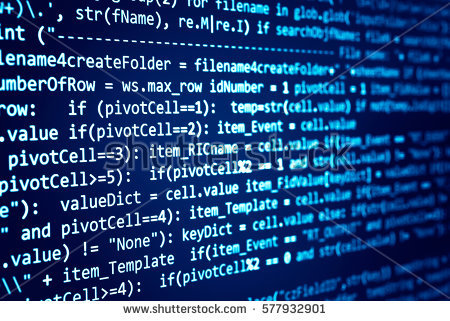

Which path are you gonna pursue?
This is to put you on your desired path in programming!
By: Julius Bade
Please fill out the form:
Thank you for Submitting! Here are some Tracks for you:
Java

Java is arguably the most popular programming language today. It's used for everything from web applications to backend services to mobile applications to embedded systems. Students who learn Java programming will be able to create dynamic web applications, and be able continue into our Android track. Companies using Java who have hired Epicodus graduates include Nike and Thetus.
C#

The C# ("C sharp") programming language is most commonly used with the .NET framework. Students who are well-versed in C# programming can use it to create client applications, database applications, distributed components, and much more. Students who learn C# programming and combine it with their knowledge of the .NET framework can target larger enterprises, government agencies, and companies serving enterprise and government clients for employment. Companies using C# and .NET who have hired Epicodus graduates include Windsor and Incomm.
Ruby

Ruby is a programming language focused on simplicity and productivity. It has an elegant syntax that is natural to read and easy to write. The Ruby programming language is most commonly used with the Ruby on Rails framework. Ruby and Rails are typically used by younger companies and startups, especially for building interactive web applications. Companies using Ruby and Rails who have hired Epicodus graduates include New Relic, LivingSocial, and SpendWell.
Here are some questions for you to help you consider the right track!
Click here for more details!